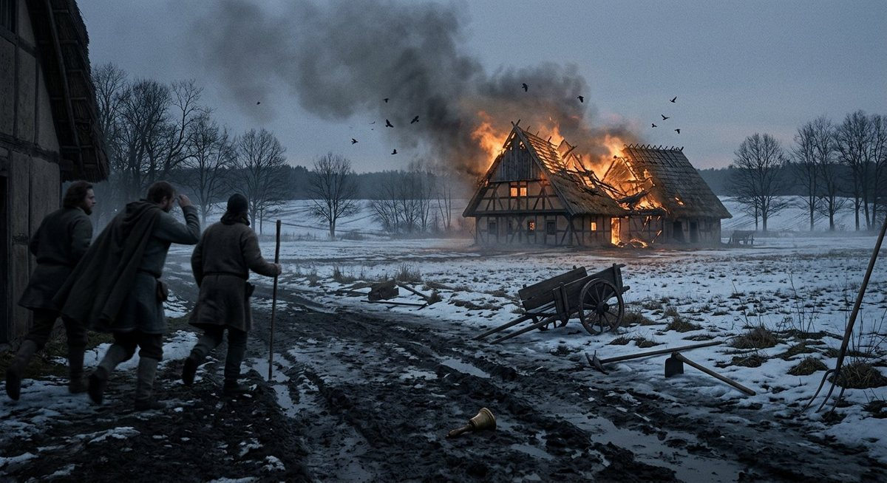
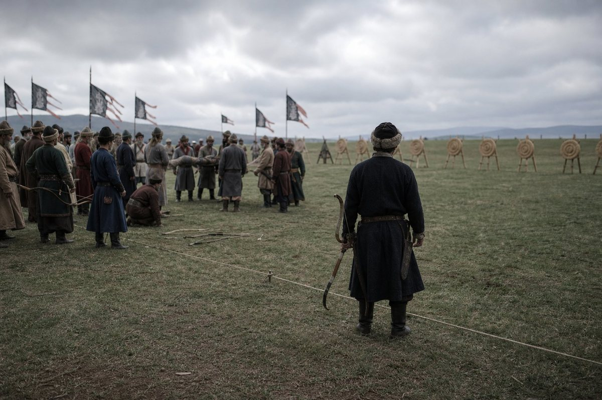
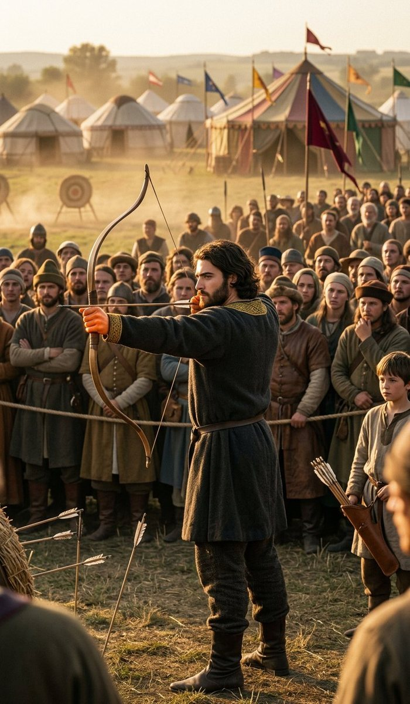
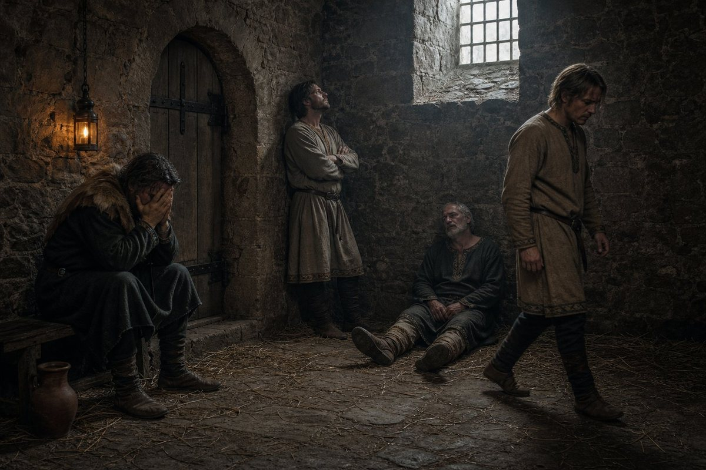
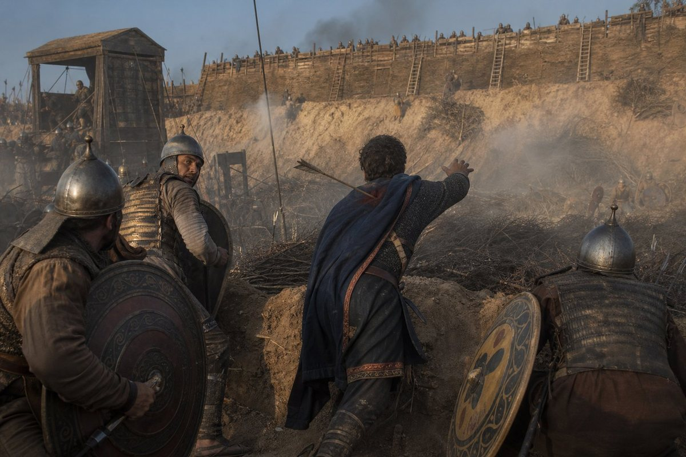
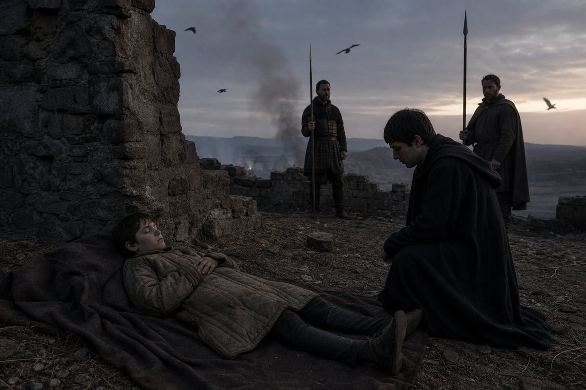
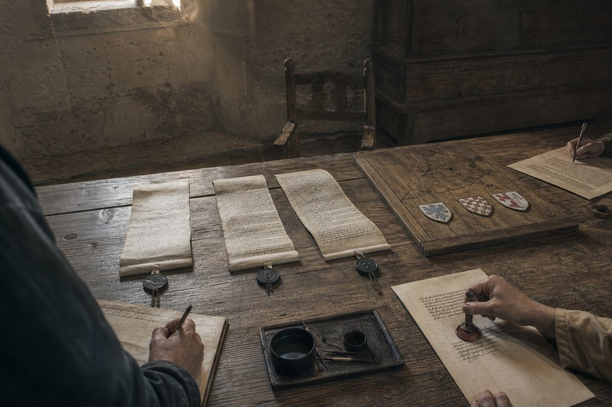
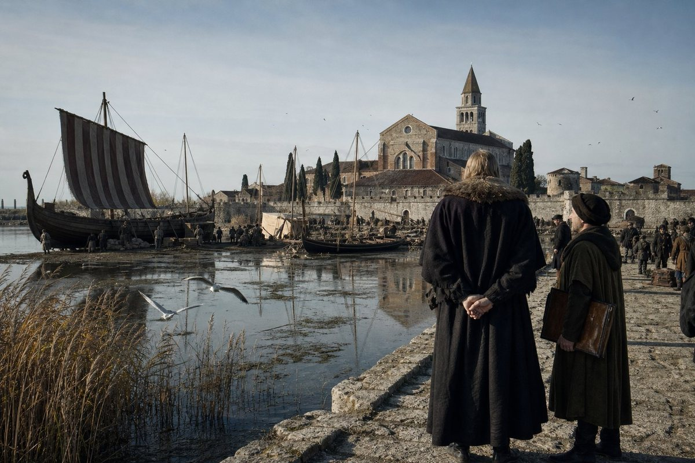
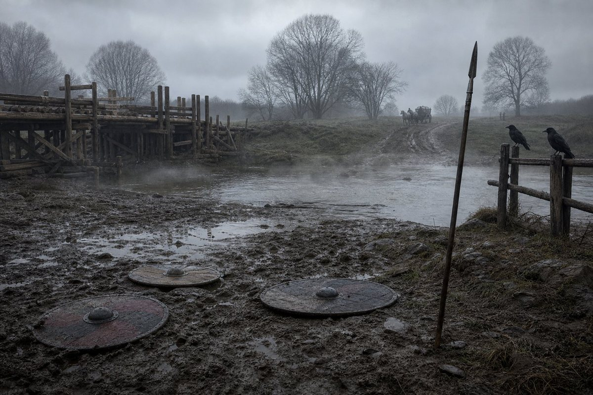

The tenth day of the first month of 921
On the tenth day of the first month of 921 the peasants of Bavaria rose, under a man called Svetozár, and the record gives the entry one line and no numbers at all.
No numbers. Not one. I have gone over that page with a candle and a wet finger because the entries either side of it have numbers in them, and there is nothing: a date, a name, the word rising, and then the next entry, which is about a bishop.
I had been waiting for something of the kind since the first day of the year and I want to say plainly what I expected and how wrong I was, because the correction is the whole of this chapter.
I expected the four. Ludwig, Wilbert, Bohodar and Adalhard, four of the twenty-nine who had come into the hall at Regensburg in the eleventh month and gone out of it without swearing, and who had been sitting on their own lands all winter with their own men, owing nothing. I wrote in the last chapter that four names in a column are not for this page but for the page after it. I was sure that page had come.
It had not. The record does not join them to the rising, and the chancery of Bavaria, which joins things for a living, does not do it either. The peasants of Bavaria rose under a man called Svetozár, whose name is Slav and whose country is not given, and four lords of the realm sat on their lands through the whole of it and are not named again until the sixth month.
So I have to write this chapter as it happened and not as I had arranged it in my head, which is the discipline of the whole book and the only reason anybody should believe a word of it.
What a peasant rising is
I have been in eleven countries in sixty-three years and I have seen four of these, and I want to put down what they are before I write what this one did, because a reader in a hundred years will meet the phrase in a chronicle and think it means a battle.
It is not a battle. It is a hundred villages doing the same thing in the same week without a plan, because the same thing has become unbearable at the same time in all of them. It is a manor burned in the night by men who know which gate is not watched. It is a tax collected twice and then a steward found in a ditch. It is a castle with its well fouled and forty people inside it eating their horses. And then it is an army of the poor in a field, with scythes and staves and three hundred men who have been soldiers, and that army is either beaten in an afternoon by horse or it is not, and if it is not, it becomes something nobody who started it can control.
The record gives the rising of 921.1.10 no numbers, so I will not give it any, and the reader should understand that this is not a gap in the record that I can fill from anywhere. But the record does give me four years of antecedents and I am going to set them in a line.
The crown of Bavaria had paid an army on time for ten years. I have written that sentence as a compliment in three chapters and it is the reason a broken company of four hundred men became a kingdom with eighty-eight counties. An army is paid out of somewhere. In a realm where two thirds of the map was handed to children in the seventh month of 920, and where the crown's own lands fell from twelve counties to four in one afternoon, the paying does not come from the crown's own land. It comes from the counties, and the counties take it from the man who works.
And there is the second antecedent, which is older and worse. The church of Bavaria has never accepted the crown, and in 908 a woman called Heilwich put an army of that grievance into a field and lost. She is alive in 921. She is forty-one. And a grievance with a general who is still alive is not a grievance that has been settled; it is a grievance that is waiting.
Three days later
On the thirteenth day of the first month of 921 — three days after the peasants — the Saxons rose, under a man called Willichin, and the record calls it the Saxon Chalcedonian Uprising, and says it was a rising for Bohemia.
Both of those things are in the same entry and I am going to take them apart, because on the face of it they do not belong together.
Chalcedonian means the church: the Latin church, the bishops, the mass in a language the king does not speak to a god he does not have. That is Heilwich's rising of 908 exactly, thirteen years on, in a different country, under a different man. And the record says it was for Bohemia.
Bohemia had been the crown's since 910, won in the King's absence at Stříbro in a single afternoon — five thousand five hundred and fifty-five against four hundred and twenty-three, three men lost — and given to Polydoros, who was in this book before he was a count. It is the least Bavarian county in the realm and the most recently taken, and it has a church of its own and lords who remember being a kingdom.
I do not know what Willichin wanted in Bohemia. The record gives a name, a date, a church and a country, and does not give the demand, and I am not going to write the demand for him. What I can say is what the two entries put together look like, and I mark it as a reading: in the same week of the same January, the men who work the land rose against the men who take from it, and the men of the Latin church in Saxony rose for a Slav county the crown had taken eleven years before. Neither of them is about the four names. Both of them are about the realm I described in the last chapter, which is enormous on the map and is not one country, and which has a Hellene on its throne and a church that has not forgiven anything.

I was at Regensburg. I want to put that down because everything else in this section is at second hand: I did not go to Saxony and I did not go into the villages, and what I have is what came into the chancery and what the men who came back said, which in a rising is worth about a third of what it is worth in a war.
What came into the chancery in the first three weeks was a list of places. What did not come in was any message from the four.
The first spring, on three fronts
Here is what the Kingdom of Bavaria was doing in the third month of 921, and the reader should hold the shape of it, because it is the thing his father never had to do.
The holy war against Friedrich the Forgetful was still running. It had been declared on the fifteenth day of the fourth month of 920, seventy-four days before the old King died, and it had been fought twice in the field in the autumn and won twice. On the first day of the third month of 921 it was fought a third time, at Neuss.
The record gives Neuss a place and a date and nothing else. No numbers, no dead, no result. I have looked at that entry a hundred times and there is nothing in it, and I am not going to write a battle out of a place-name. What I will say is this: a holy war is the one war a king cannot let go of for a season to put down his own peasants, because it is not a quarrel about a border that can be settled later. It was declared by a church. It is being fought for a thing that cannot be negotiated, and it goes on while the villages burn behind him, and that is the trap the father left, whether he meant to or not.
The peasant war was in the south and the east, in the counties, which is to say in the hands of the six boys and their stewards, and the fighting of it fell to whoever the Queen and the chancery had put in those counties, and to the crown's own household troops, and to the company.
The Saxon rising was in the north and it was properly an army by the second month, because Willichin had three hundred men who had been soldiers and a church behind him and a country to promise.
Three wars, none of them declared by him, in the third month of his second year, at nineteen years old, in a realm whose crown held four counties out of eighty-eight.
And here is the thing that I did not expect and that I have thought about all year. He did not go to any of them himself. He sent the household south with Benedetto and he sent the east to Xenophon and he kept the west for himself and he fought the holy war, and the peasants were put down by men he had never met in villages he had never seen, and that is not what his father would have done and it is the first decision of his reign that I would call a plan rather than an answer.
His father, at nineteen, would have gone to the villages. His father went everywhere. His father was in the line at twenty-three, was wounded twice by thirty-five, rode to Rome and to Tunis and to Athens, and made a legend out of being in the room — and the legend is why four hundred men followed him across Europe and why a church could not kill him with thirty years of slander. The son stayed in the west with the war that had a church behind it, and sent other men to the mud, and it was the right thing to do and it cost him something the record does not have a word for and I will try to say it later.
Heves, and the arrow
Somewhere in the middle of that spring the court went to Hungary, and I have never been able to make that make sense and I am going to write it down exactly as the record has it and let it stand.
There was a grand tournament at Heves, in Hungary, which ran from the first month of 921 to the seventh, and it was hosted by the Grand Prince Borisz, whom the record calls the Wolf.
I have written the epithet Wolf once before in this book, for László Maróti, who came into the company in Rome in 897 at fifty and died of old age at sixty-nine in 916, and whose Carinthia passed to a man called Péter in six words. This is a different wolf. Two men and one word, and I have set them in a note and I will not join them, which is what this book does with names it cannot prove.
A grand tournament in Hungary in 921 ran six months. I have described tournaments in this book before — at Győr in 912, where the King recited and would not tell anybody what the piece was, and at Kruszwica in 915, where he won the Recital at sixty-five, two months after he buried Balc in that same camp. They are not one afternoon. They are a season with a court sitting in it: a great lord's hall, a foreign king or a prince as host, four hundred people eating for half a year, and every man in central Europe who wants to be seen going to be seen.
I do not know why the King of Bavaria, with a peasant war in his own counties and a holy war on his west and a rising in Saxony, went to a tournament in Hungary for six months. The record does not say. Nobody in the household could tell me and I did not ask him.
What the record does give of Heves is two things, and they are the two strangest entries in the whole of this volume.
The first is a man called Gáspár. He is called, in the record, an unknown challenger — which means the chancery did not know who he was and did not find out — and he entered the archery.
The second is that a wayward arrow struck a man called Mikul.
That is the whole of it. Not who shot it, not whether Mikul lived, not what it hit. An arrow going where it was not meant to go, in a crowded field, in a sport the whole of Europe practised with the whole of Europe standing behind the butts. And on the twenty-second day of the fifth month of 921, Gáspár died, in the record's words, in an accident.
I am not going to join those two entries. They may be one thing; a man in a crowd can be struck by a wayward arrow and die of it three weeks later, and the chancery, which does not speculate, would write it exactly as it wrote it. They may be two things and the summer may have had a bad accident in it and a man who died of something else. I do not know, and I have refused to invent a murder for a bishop's wife and a rivalry for the Duke of Slavonia, and I am not going to invent a killing at a tournament to make a better page.

What I will say is what it looked like from the stands, because I was there and I have never written it down until now.
Mikul went down in the third volley and there was a great deal of shouting and then a good deal of blood and then men carrying him, and the shooting stopped for a quarter of an hour and then it did not stop any more, because four hundred people had come a long way to see archery and one man being carried out is not the end of a festival.
And that is the ordinary horror of a tournament and I have seen it a dozen times, and what I remember of it is not Mikul. It is that Gáspár, the unknown challenger, was standing at the butts with his bow in his hand, and did not go to look, and shot his next three arrows into the mark, and was in the top four at the end of the day.
The twenty-eighth day of the fifth month
On the twenty-eighth day of the fifth month of 921, Antiphates of Bavaria won the archery at Heves.
The record gives that as a fact among a great many other facts about a six-month festival, and I want to explain why I have made it the middle of this chapter.
Because a king is not supposed to win. A king in a tournament is a man who enters the lists and is beaten honourably in the third pass, or who is thrown by a Frank in the first one, as his father was, if the reader remembers, at twenty in Macedonian coat over mail on a grey horse out of Adrianople. A king who wins a contest is either so much better than his own lords that it is an insult, or he has been allowed to win, and every man in the field knows which it is.
What the record does not tell me is whether he was allowed. I have looked for a hint in the entries of the court that winter and there is none. I will say only this: the archery at Heves had an unknown challenger in it who shot three arrows into the mark after a man was carried off the field in front of him, and the man who beat him was the King of Bavaria, and both of them were on the same ground for six months, one of them getting better known and the other one getting better.

And there is a thing in the record about the King at Heves that I have saved until last because I do not know what to do with it, and I have decided to put it down and not do anything with it.
The record says that at Heves he tried a fancy shot to liven up the crowd.
That is all. He tried a fancy shot to liven up the crowd. A boy of nineteen, with three wars in his own realm and a brother in Passau and a church that calls him a witch, standing at the butts in a foreign country in front of four hundred people, doing something difficult and unnecessary because the crowd had gone quiet after a man was carried off the field.
I have watched him since he was five years old. I have written him quiet, and just, and compassionate in a way that is done with the hands, and reckless, and I have quoted the record's list of him as though it were a character. It is not a character. He was nineteen, and there had been a bad accident in front of him, and four hundred people had come a long way, and he tried a fancy shot to liven them up.
That is the most human thing in the fifth volume and I have no idea what he was like for the rest of his life, because the record does not give me another line like it.
Sayn, the first day of the fifth month
On the first day of the fifth month of 921 — which is in the middle of the archery at Heves if I have the dates right and nobody has ever been able to prove that I have — the holy war was fought again at Sayn.
Sayn the second time. The record gives it no numbers at all this time, not even the two armies. It gives the date and the place and goes on.
There were three battles at Sayn in this history, in the eleventh month of 920 and the fifth month of 921 and the eleventh month of 921, and the record gives forces for the first of them and nothing for the other two. A place does that in a war: it becomes a crossing that has to be held every six months, and after the first time nobody writes down the numbers because everybody who is coming to the war already knows them.
I have said it before in this book and I will say it once more and then be quiet about it: the ledger of Bavaria is a record of what the chancery thought worth writing, and it thought a great many battles worth a date and a place and no men.
The twenty-fourth day of the sixth month
On the twenty-fourth day of the sixth month of 921 the Saxon rising was beaten, and the King of Bavaria imprisoned Wilbert, Adalhard, Ludwig and Bohodar, and did not execute them.
I have read that entry more often than any other in the fifth volume. Four names, four arrests, one war ended, and the four men are the four who came into the hall at Regensburg on the fifth day of the eleventh month of 920 and did not swear.
Now I have to be careful, because this is where a lesser book would close a circle and feel clever. The record does not say that the four joined Willichin. It does not say what they were charged with, or where they were taken, or on what evidence, or whether there was a trial, or whether the King had been waiting seven months for the war to end so that he could do this without a rising behind him. It gives four names, a date and a prison, and it does not even give the prison.
What the record does give me is order. The Saxon rising was beaten on the twenty-fourth of the sixth month, and on the twenty-fourth of the sixth month four great lords of Bavaria were taken. Not before. Not in the third month when the rising was at its height and a man might have needed to make an example. After.
I will tell the reader what I think and mark it, as I have marked every reading in this book.
I think he waited. I think a nineteen-year-old king with three wars and four unsworn lords inside his own realm spent the winter and the spring deciding not to move, because a lord taken in the second month is a martyr with a grievance and his cousins in the hall, and a lord taken on the day the rising that might have joined him is beaten is a man with nothing behind him. I think he did arithmetic, in the way I have watched him do arithmetic for a year, and I think the arithmetic was correct.
And I think that is why he did not kill them. Four men in a cell are four counties that can be given to somebody loyal when they die; four men on a scaffold are four families with a blood claim and a story. He took them alive and he kept them alive and he did not say why, and in the eleventh month of 921 the realm was still paying for the war they were arrested in the middle of.

Do not mistake me for a man who admires it. I have been a soldier for forty years and I have never in my life been able to do the cold thing cleanly, and I watched him do it and it frightened me a little, and I am sixty-three and not much frightens me now.
Xenophon, the twenty-fourth day of the seventh month
On the twenty-fourth day of the seventh month of 921 Xenophon, Duke of Slavonia, was killed in a siege, fighting for the king.
He was the second of the three great officers of this crown to die in the fifth volume and the first to die in a war.
I have written him twice, and both times I have had to write him as a name with counties after it, and now he is dead and I am going to give him the paragraph the record never did.
Xenophon does not occur in this book before the twenty-second day of the eighth month of 913. I said that when he appeared, and I said that a Greek officer turning up in a Bavarian record with three counties after his name and nothing before it is not a mystery, it is an ordinary thing: our kind come out of nowhere in the record and the record only starts writing when we are given land. He held Požega, Vukovár and Zagreb for eight years. He carried the crown of Bavaria on a cushion in the ninth month of 920, at the height the master of ceremonies told him to carry it, and stood on the step beside a woman he could not be in a room with, and between them they made a whole coronation, and he went out by a different door.
And then, ten months later, he was killed in a siege, and Euthykritos took Slavonia.
I have to stop here and say something about two names that are one letter apart, because a reader in a hundred years will read them as one man and this book has spent four volumes refusing to do that.
**Euthykritos**, who takes Slavonia in the seventh month of 921, is not **Euthykrates**, the King's brother, who is twelve years old that summer and has held Passau since the seventh month of 920 and Jihlava and Znojmo since he was eight. One is a man given three counties for a duchy, the other is a child. The record spells them differently and I have checked the spelling four times in two hands. In a book where two boys are called Edouinos and nobody in the chancery thought it worth a note, two Greeks called Euthykritos and Euthykrates are, I am sorry to say, entirely in keeping.
I do not know who Euthykritos was. He is not in this book before this line and I will not make him up, and if the reader finds him again he will find him where the record puts him.

Veldenz, the first day of the ninth month
On the first day of the ninth month of 921 the holy war was fought at Veldenz. The record gives a date and a place and no numbers, and I have nothing to add to that, and the reader has by now learned what that means: another crossing, another six months, another line in a ledger with nobody in it.
I gave Sayn a whole section because the numbers in the first Sayn were the argument of that chapter. I am not going to pretend Veldenz is more than it is. It is the fourth battle of a war that had already been won twice in the field and that could not be ended, and the reason it could not be ended is that a holy war is not a war about ground.
Ivančice, and the boy in the east
Now I have to write the worst page in the fifth volume, and I have put it off for four sections, and here it is.
The peasant war in the east was fought by the crown's household troops and by the company and by the men in the counties, and among the men in the counties was the King's brother Euthykrates, who was thirteen years old in the tenth month of 921, and who had held Passau since the seventh month of 920, and Jihlava and Znojmo since the sixth day of the fourth month of 916, when he was eight and the combined age of the three boys given six Moravian counties was eleven.
The record gives him two battles. At Ivančice he won: one thousand one hundred and fourteen against one thousand and twenty. At Jihlava he lost.
A boy of thirteen won a battle and lost a battle in the same season, and the tracker I work from puts both of them on the first day of the eleventh month of 921, which is after he is dead, and which is the sort of thing that happens when a clerk makes one page out of a summer. Read them as battles from before the twenty-second day of the tenth month, because on the twenty-second day of the tenth month of 921 Euthykrates of Bavaria was killed in a siege, in the peasant war, at thirteen years old.
I did not know him. That is the truth and it is shameful and it is the truth: I have been in this company since 897 and I have written four chapters of this volume and I could not have told the reader one thing about that child except his counties and his age. He was given Jihlava and Znojmo at eight, in a hall, in one afternoon, in a list of six counties read out to three children whose combined age was eleven, and Matako — who is dead now, and who wrote that page before she died — wrote the sentence the whole policy stands on. A child cannot rebel. She was right. A child also cannot win a battle, and he did that too, and then he could not, and a county is not a place to put a boy.
The record's own note on it is the sentence I have been dreading since the first page of this chapter, and I am going to print it as it stands and add nothing to it: he is the first of the King's children to die in war.

He inherits Passau, Jihlava and Znojmo. He, the King. The crown takes back what the custom gave the boy, because the boy is dead and the counties come to the nearest lord, and the nearest lord of a dead child of thirteen is his brother the King.
I have written the custom in the last chapter as a rule applied by honest men in an afternoon, with no villain in it, and I stand by every word. This is the other end of the same rule. In the seventh month of 920 it took two thirds of a crown's own lands and gave them to six boys whose combined age was forty-one. In the tenth month of 921 one of those boys is dead at thirteen with two battles behind him, and the counties come back to the crown by the same arithmetic that took them away.
That is what the family was for. His father built a family instead of a country because a country could be taken from him and a family could not, and he was right, and the family's price is that children hold counties and children go to sieges.

The twenty-ninth day of the tenth month
On the twenty-ninth day of the tenth month of 921, seven days after the boy was killed, Aquileia went to Þorbrandr.
I do not know who Þorbrandr is. The name is Norse and it is the first Norse name in this book, and the record gives it one word, which is Aquileia, the city the crown took in the fourth month of 914 and which Antiphates had kept for himself in the partition of the seventh month of 920 — one of the four counties that were the whole of the crown's own land.
So in the seventh day after his brother is killed, the King gives away one of his four counties to a man with a Norse name, and the record does not say why, and I am not going to invent a reason. It may be a debt. It may be a bargain for ships, which would be a strange thing for a Bavarian king and not a strange thing for a man whose realm now runs to the sea at Aquileia. It may be that a county on the Adriatic is worth less to a crown with a peasant war in it than a man who can hold it.

I put it here, next to the boy, because they are seven days apart and because the reader should see what a king's month looks like: a brother dead at thirteen, his three counties back in the crown's hand, and one of the crown's own four counties given to a stranger with a Norse name in the same week.
The twenty-fifth day of the tenth month
On the twenty-fifth day of the tenth month of 921, three days after his brother was killed, the King of Bavaria left Regensburg for Rome.
I have looked at those two dates on the page more often than at anything else in this volume. The twenty-second, a boy of thirteen killed at a siege in the east. The twenty-fifth, a king on the road south with a household and a purpose the record calls Reflection.
Three wars were running when he went. The peasant war, in which that boy had just been killed. The Saxon rising, beaten four months earlier with four lords in a cell. The holy war, declared against his father, fought at Neuss and at Sayn and at Veldenz and at Sayn again, and no nearer an end for any of it.
And he went to Rome. In the winter, with Germano of the old company, who is sixty, to sit in a school.
I have written in this chapter that he does arithmetic, and I stand by it, and this is the one decision of the year I cannot make into arithmetic. A king who leaves three wars and a dead brother and goes south for ten months to be taught is either a man who has understood something about his own realm that I have not, or a man running away; and I was not in the room when he decided, and I will not pretend I was.
What I will say is what the record says: that the purpose was Reflection. And that the last time a king of this house went south with a purpose the record does not explain — the ninth month of 912, to a city of two thousand people inside a ruin — he came back and won a Recital and a war in the same year.
The charter giving Aquileia to Þorbrandr is dated the twenty-ninth day of the tenth month, seven days after the boy. It was sealed on the road, because a king’s chancery travels with a king.
Sayn, the first day of the eleventh month
On the first day of the eleventh month of 921 the war was fought at Sayn for the third time. No numbers. A date, a place, and the year ending.
That is the last entry of the chapter and it is the right one, because it is the shape of this whole year: the same crossing, three times, with the numbers falling out of the record as the war went on. Sayn in the eleventh month of 920 with five thousand seven hundred and eighty-nine men in it and not one dead man written down. Sayn in the fifth month of 921 with nothing but a date, while the King was shooting at a mark in Hungary. Sayn in the eleventh month of 921 with nothing at all.
Four battles of the holy war in this chapter — Neuss, Sayn, Veldenz, Sayn — and the record gives me numbers for none of them. I have written about eleven battles in this book with the dead counted to the man, and this year I have four battles and a rising and two sieges and I could not tell the reader how many men died in any of it.

The fourth subject
When I began this volume I was given nothing to go on but a ledger and a family, and the man who sets the subjects of this history set four of them: the old King's last years and his death, which are done; the rise of Antiphates; the precariousness of the kingdom; and the rebellion that he would have to fight.
The rebellion is this chapter. It is here, and it is not the four names and it is not the church and it is not the peasants of one country, and I have spent a year learning that the things that come for a realm do not come in the shape the last chapter arranged for them. Two risings in four days in the first month of 921. A rising for Bohemia led by a Saxon under a church's banner. Villages burning in counties held by children. Three wars at once and a tournament in the middle of them.
And it held. That is the thing I have to write and the thing nobody will believe in a hundred years: the Kingdom of Bavaria, at the end of 921, was still eighty-eight counties and still the seventh largest realm in the world and still had a king on its throne — a boy of nineteen who had never commanded a battle in his life before Mainz, who had spent the year sending other men to the mud, who had won the archery at a tournament in Hungary and tried a fancy shot to liven up the crowd, and who had taken four great lords alive on the day the rising was beaten and had not killed them.
He is not his father. I have written that sentence twice now and it is not a criticism and I am going to finish it properly, because I have watched him for two years and I am sixty-three and I am not going to get another chance to be fair to him.
His father was the greatest man I ever served under and the reason I am alive, and he did a thing no Greek had done in four hundred years, which was to take a kingdom in Latin Europe and keep it for thirteen years with a church against him. And his father could not have fought this year. His father would have gone to the villages himself, and been seen, and made a story out of it, and the story would have held the realm together for another five years and it would have cost him the west.
The son did the arithmetic instead. He stayed where the war had a church behind it, he sent the household to the mud, he waited seven months to arrest four men, he buried a brother of thirteen and gave away a county seven days later, and at the end of the year the realm was still there. There is no story in that. Nobody will sing it. In a hundred years the only thing anyone will remember about 921 is that the King of Bavaria won the archery at Heves.
*Here ends the second chapter of the fifth volume, at Regensburg on the twenty-fourth day of the tenth month of the year of grace 921, and on the road south in the twelfth month of it, in the hand of Laurentios of the company, born above the Gulf of Corinth in 858, who has kept this ledger for two years and seven months, and who was in the second line at Mainz and in the stands at Heves and in neither of the places where this year was actually decided, and going to Rome for the second time in fourteen years, on foot, at sixty-three, in the winter.*